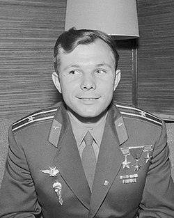
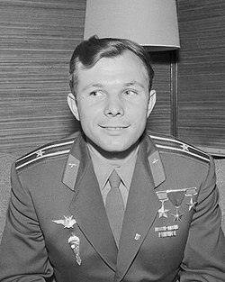

Premier homme dans l'espace
Le 12 avril 1961, Youri Gagarine, un cosmonaute soviétique, est devenu le premier homme à voyager dans l'espace à bord de Vostok 1. Cet exploit a marqué un tournant dans l'histoire de l'exploration spatiale.
Le 12 avril 1961, Youri Gagarine, un cosmonaute soviétique, est devenu le premier homme à voyager dans l'espace à bord de Vostok 1. Cet exploit a marqué un tournant dans l'histoire de l'exploration spatiale.
